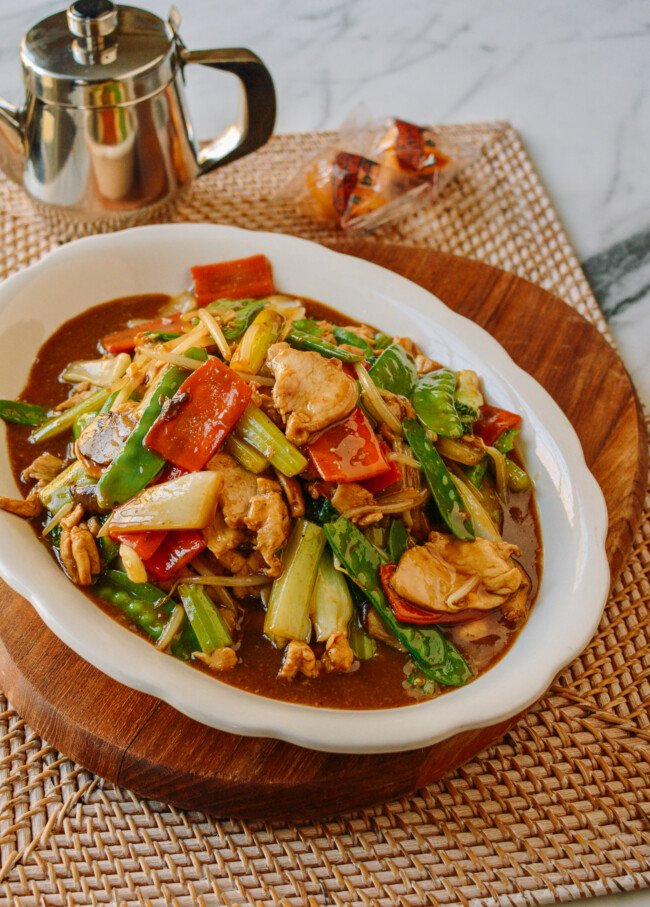

CHOP SUEY
Today we’ve got a recipe for you that harkens back to the early days of Chinese immigration to the United States: Chop Suey. Chinese food in America has evolved much since then, to the point where chop suey itself sounds like an outdated term. But that doesn’t make it any less tasty!
Chop Suey (杂碎, zásuì in Mandarin or zaap sui in Cantonese) refers to “odds and ends” or miscellaneous leftovers. It’s a dish combining all those odds and ends into a stir-fry of meat and vegetables, coated in a tasty sauce.
Today we might call chop suey a fridge clean-out dish. You could add the last few carrots or mushrooms in the fridge, some celery, half a bell pepper, and a protein, like chicken breast or leftover rotisserie chicken, and voila! You have a chicken chop suey!
Happy Cooking!